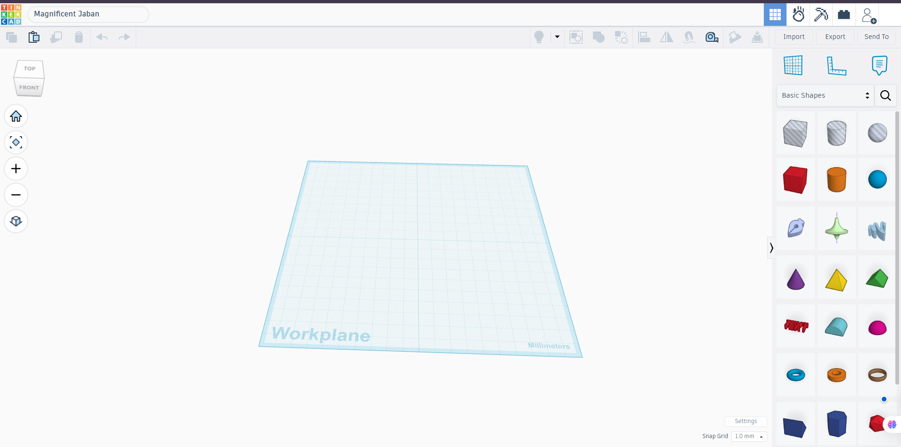
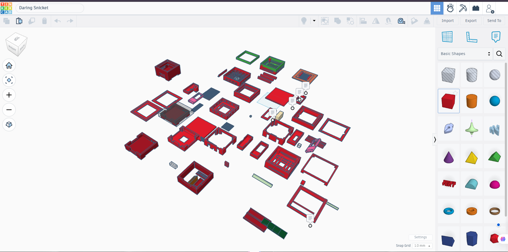
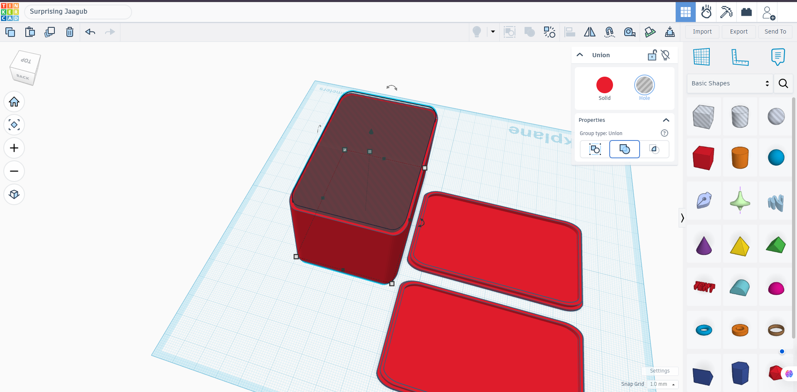
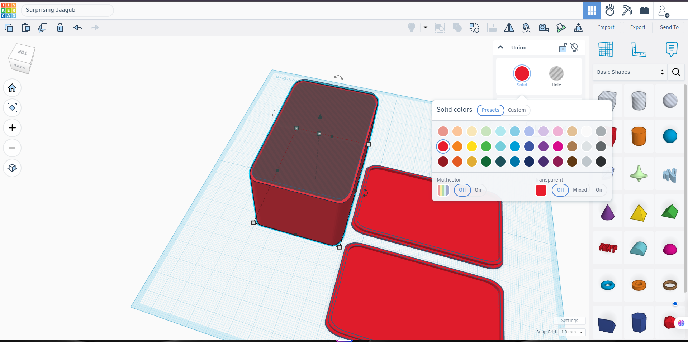
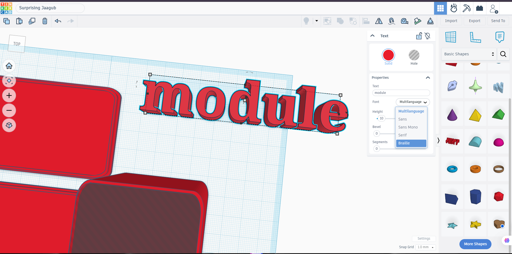
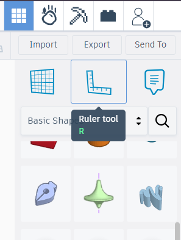
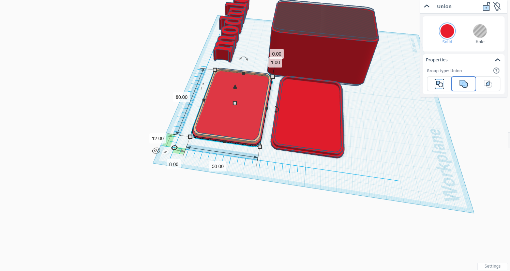
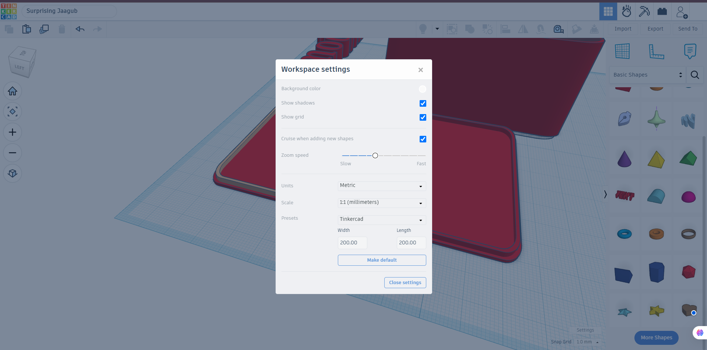
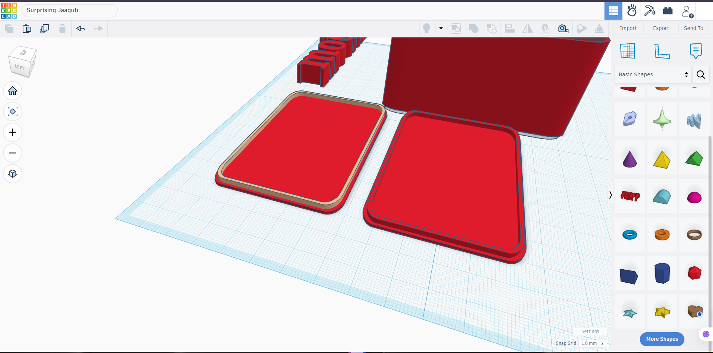
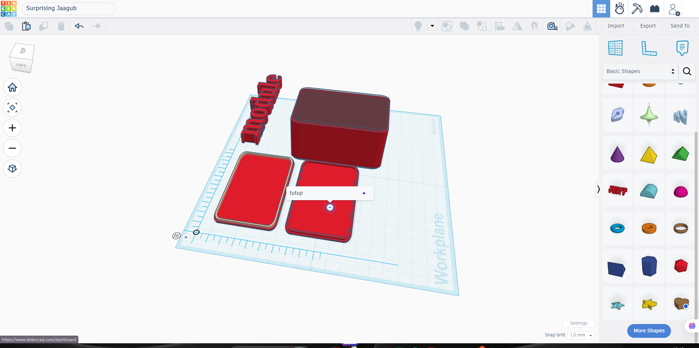

Desain 3D dengan Tinkercad
Dari bentuk dasar sampai siap cetak 3D — dirancang untuk siswa SMA/SMK yang baru memulai.
Tujuan Pembelajaran
Setelah mengikuti sesi ini, peserta mampu:
Memahami konsep dasar desain 3D dan kegunaannya di dunia nyata
Menguasai navigasi & antarmuka kerja Tinkercad
Membuat, menggabungkan, dan memodifikasi bentuk 3D
Menggunakan alat ukur untuk mendesain secara presisi
Menambahkan teks 3D dan mengatur warna objek
Mengekspor desain ke format siap cetak 3D (STL)
Apa itu Desain 3D & Tinkercad?
Proses membuat model benda dalam ruang 3 dimensi (panjang, lebar, tinggi) menggunakan perangkat lunak komputer.
Digunakan untuk merancang produk, prototipe, komponen mesin, aksesori, hingga model cetak 3D.
- Aplikasi desain 3D berbasis browser, gratis, dari Autodesk
- Tidak perlu instalasi — cukup akun & koneksi internet
- Antarmuka sederhana: cocok untuk pemula & pelajar
- Hasil desain bisa diekspor untuk dicetak dengan printer 3D

Mengenal Antarmuka Kerja
Tampilan awal ruang kerja (workplane) saat proyek baru dibuka.
- Kotak nama proyek — ganti nama sebelum mulai bekerja
- Ikon Home, Zoom (+/–), dan Orbit — untuk navigasi tampilan
- Kubus orientasi di kiri atas — klik untuk memutar sudut pandang
- Panel bidang biru transparan — inilah "workplane", tempat objek diletakkan
Panel Bentuk Dasar
Semua objek 3D dibangun dari kombinasi bentuk-bentuk dasar ini.
- Pilih kategori "Basic Shapes" di panel kanan
- Seret (drag) bentuk ke workplane
- Ubah ukuran, posisi, rotasi, dan warna sesuka Anda
- Kombinasikan beberapa bentuk untuk model yang kompleks


Solid, Hole & Menggabungkan Objek
Dua sifat objek yang jadi kunci membentuk model gabungan.
Objek padat berwarna merah — bagian yang akan tercetak/terlihat.
Objek transparan bergaris — memotong/melubangi objek solid yang bertumpang tindih.
Group (Ctrl+G) — menyatukan objek terpilih; solid menyatu, hole melubangi solid di sekitarnya.
Mengubah Warna Objek
Klik objek terpilih, lalu klik lingkaran warna pada panel Properties.
- Tab "Presets" untuk warna siap pakai
- Tab "Custom" untuk memilih warna bebas (RGB/HEX)
- "Transparent" membuat objek tembus pandang — berguna melihat bagian dalam
- Warna tak memengaruhi hasil cetak (kecuali printer berwarna)


Menambahkan Teks 3D
Bentuk "Text" mengubah tulisan menjadi objek 3D.
- Kolom "Text" — ganti isi tulisan
- "Font" — pilih gaya huruf (Sans, Serif, Sans Mono, dll.)
- "Height" — mengatur ketebalan huruf
- "Bevel" & "Segments" — menghaluskan tepi huruf
- Cocok untuk label nama, gantungan kunci, atau penanda model
Alat Ukur (Ruler) untuk Presisi
Ruler membantu menempatkan & mengukur objek secara akurat, dalam satuan milimeter.


Pengaturan Ruang Kerja
Sesuaikan satuan, ukuran plat cetak, dan tampilan grid.
- Units: Metric (mm) — satuan standar untuk cetak 3D
- Width/Length plat kerja, mis. 200 × 200 mm
- Show grid & Show shadows — bantu visual saat mendesain
- Snap Grid — jarak "lompatan" objek saat digeser, agar ukuran rapi


Kotak Bertutup Berlabel
Studi kasus — menggabungkan semua teknik yang telah dipelajari.
- Buat kubus, jadikan "Hole", lalu Group dengan kubus solid → jadi wadah berongga
- Buat bentuk pipih untuk tutup kotak
- Tambahkan teks (mis. nama/label) di atas tutup
- Group teks dengan tutup agar menyatu
- Susun & sejajarkan semua bagian di atas workplane
Hasil Akhir & Pemberian Nama Objek
Beri nama tiap bagian (mis. "tutup") agar mudah dikenali dalam proyek.
- Klik dua kali objek untuk mengganti namanya
- Nama yang jelas memudahkan saat proyek makin kompleks
- Periksa dari berbagai sudut pandang sebelum lanjut
- Pastikan semua bagian sudah tergabung sesuai rencana desain

Ekspor Desain & Cetak 3D
Setelah desain selesai, siapkan file untuk dicetak.
Selesaikan Desain
Pastikan semua objek sudah di-Group dan tidak ada bagian melayang/menembus.
Klik "Export"
Pilih format .STL (paling umum) atau .OBJ untuk kebutuhan lain.
Slicing
Buka file STL di aplikasi slicer (mis. Cura) untuk diubah jadi instruksi printer.
Cetak
Kirim hasil slicing ke printer 3D dan mulai proses pencetakan.
Tips & Kesalahan yang Sering Terjadi
- Gunakan Ctrl+D untuk menduplikasi objek dengan cepat
- Simpan pekerjaan berkala (auto-save, tapi cek koneksi internet)
- Gunakan tampilan atas/samping untuk menyusun objek presisi
- Manfaatkan Align untuk menyejajarkan beberapa objek sekaligus
- Lupa meng-Group hole dengan solid → lubang tidak terbentuk
- Ukuran objek terlalu tipis (< 1 mm) → rawan patah saat dicetak
- Objek saling menembus tanpa disatukan → file STL bermasalah
- Tidak mengecek semua sudut pandang sebelum ekspor
Evaluasi Latihan Mandiri
Tugas: rancang benda sederhana (gantungan kunci/wadah kecil) memuat nama Anda.
| Aspek Penilaian | Kriteria |
|---|---|
| Bentuk | Model tersusun dari kombinasi bentuk dasar yang sesuai rencana |
| Solid/Hole | Ada penerapan hole untuk membuat lubang/rongga secara benar |
| Presisi | Menggunakan Ruler untuk menentukan ukuran & posisi objek |
| Teks 3D | Nama/label tercetak jelas dan tergabung rapi dengan model |
| Kesiapan Cetak | Semua objek ter-Group, tidak ada bagian menembus/mengambang |
Selamat Berkarya!
Teruslah bereksperimen dengan bentuk, ukuran, dan ide — semakin sering berlatih, semakin mahir mendesain di Tinkercad.